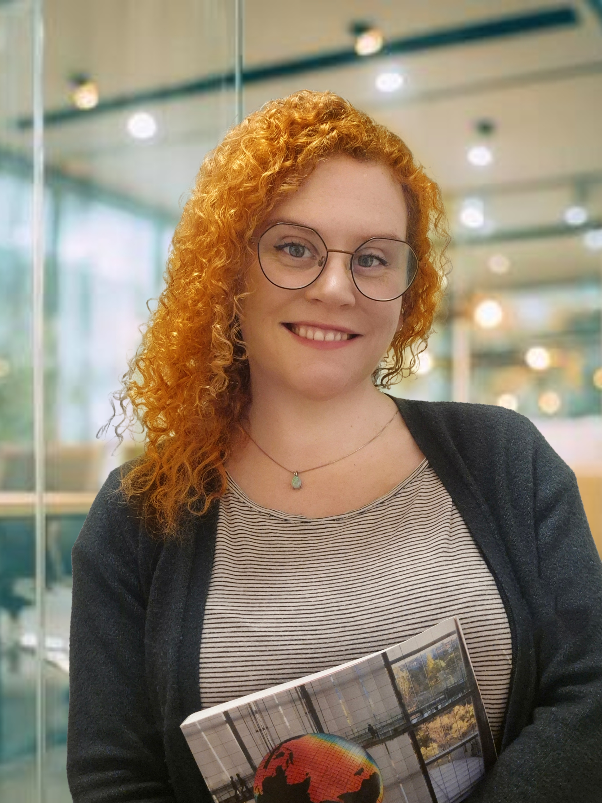

GIS · Remote Sensing · Environmental Analysis
Alexandra Ania Fjellvik
Hello! Welcome to my portfolio. I work with GIS, remote sensing, environmental mapping, and spatial analysis across land and marine systems. This site features selected project work, maps, and portfolio material.


ABOUT ME
Hi! My name is Alexandra Ania Fjellvik, and I work with GIS and remote sensing across environmental and marine topics. My background combines geospatial analysis with social geography, allowing me to connect technical mapping with wider landscape and planning contexts.
More About MeHIGHLIGHT
Blue Connect
Marine protected area analysis and communication
Contributed to environmental GIS analysis, stakeholder mapping, and geospatial communication connected to marine protected area potential and Raet National Park.
More About Blue Connect
Kelp Forest Monitoring in Norwegian Fjords
Google Earth Engine classification workflow
Developing an SVM-based classification workflow in Google Earth Engine to detect kelp forests within user-defined polygons in Norwegian fjords.
More About This Project
Plastic Debris Detection Using Sentinel Imagery in Svalbard
Exploratory remote sensing project
Explored spectral indices and machine learning approaches for detection of floating marine debris near Moffen Island using Sentinel-2 imagery in Arctic conditions.
More About This Project


LATEST WORK
Explore selected work in remote sensing, GIS, environmental mapping, marine analysis, and geospatial communication.
More Projects